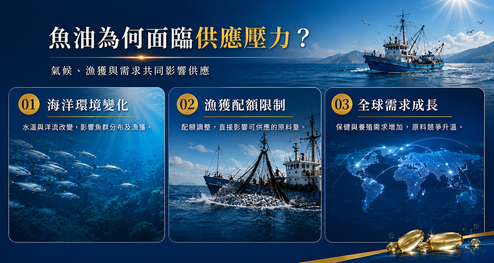

全球魚油供應鏈正在發生變化
魚油一直是全球保健食品市場的重要原料之一，其中 Omega-3 脂肪酸 EPA 與 DHA 更是消費者熟悉的營養成分。然而，魚油並不是可以無限量生產的原料。近年受到海洋環境變化、漁獲量波動、捕撈配額以及全球市場需求等因素影響，魚油供應鏈的不確定性正在提高。
對正在規劃魚油產品的品牌而言，現在需要關注的，可能已經不只是：
「魚油原料多少錢？」
而是：
「需要的魚油原料，能不能在需要的時間取得？」
為什麼魚油原料會出現供應壓力？
魚油供應與全球漁業資源高度相關，其中秘魯等主要產區的小型遠洋魚類，是全球魚油與魚粉的重要來源。當海洋環境、魚群分布、捕撈季節或政府核定的捕撈配額出現變化，都可能進一步影響魚油原料的產量與供應。
01｜海洋與氣候環境變化
海水溫度及海洋環境的變動，可能改變魚群的分布與捕撈狀況，進一步增加原料供應的不確定性。
02｜漁獲量與捕撈配額
魚油供應受到實際漁獲及各產區捕撈管理影響。當主要產區捕撈配額下降，魚油可供應量也可能受到限制。
03｜全球 Omega-3 需求
魚油除了應用於人類營養補充品，也廣泛運用於水產養殖等產業。當全球市場同時爭取有限的魚油資源，供需變化就可能進一步反映在原料價格、配額與交期。

2026，魚油供應真的變緊了嗎？
根據聯合國糧食及農業組織 FAO GLOBEFISH 2026 年市場分析，2026 年上半年全球魚粉及魚油供應呈現較為緊張的狀態。其中，秘魯主要產區捕撈配額的變化，也使市場更加關注後續魚油供應。
這代表對品牌端而言，未來魚油產品的規劃需要從過去的：
「先開發產品，再採購原料」
⬇️ 逐漸轉向 ⬇️
「產品規劃 × 原料配額 × 生產排程」同步進行
為什麼 Omega-3 一直是保健市場的重要營養素？
魚油最受到市場關注的營養成分，就是 Omega-3 脂肪酸中的 EPA 與 DHA。Omega-3 是人體重要的脂肪酸之一，也是人體細胞膜的重要組成成分。其中 EPA、DHA 主要存在於魚類及海鮮中；人體雖然可以由 ALA 轉換成 EPA、DHA，但轉換量有限，因此飲食中的魚類與相關營養來源一直受到重視。
- EPA｜Eicosapentaenoic Acid
Omega-3 家族的重要成員之一，是目前魚油產品最主要的營養指標成分之一。 - DHA｜Docosahexaenoic Acid
同樣屬於 Omega-3 脂肪酸，也是人體細胞膜的重要組成成分，DHA 在視網膜及腦部組織中的含量尤其受到營養研究關注。
魚油產品，不只是看「魚油含量」
對品牌而言，一款具有市場競爭力的魚油產品，不能只比較「一顆有多少魚油」。從產品開發角度，更應綜合評估：
- Omega-3 濃度
- EPA / DHA 配比
- 每日建議攝取設計
- 魚油型態與規格
- 原料來源與品質管理
- 氧化控制與保存條件
- 膠囊規格與食用體驗
不同產品定位、消費族群與價格帶，都可能需要不同的魚油規格與配方策略。因此，真正重要的不是單純追求「越高越好」，而是找到適合品牌定位與目標客群的產品設計。
BKE 百達醫｜從魚油原料到產品上市的一站式 OEM / ODM
面對原料市場變化，百達醫不只協助客戶「生產魚油」，更希望從產品開發前端開始，協助品牌做好完整規劃。我們的代工與開發流程包含：
- 前端規劃：市場與產品定位 ➔ 魚油原料評估
- 配方設計：EPA / DHA 規格與配方規劃
- 資源整合：原料需求與供應規劃 ➔ 產品打樣與確認
- 量產製造：生產排程管理 ➔ 品質管理與產品製造
有魚油產品開發計畫？建議現在就開始規劃。
BKE 百達醫企業 | OEM / ODM 一站式保健食品代工
讓好的產品構想，不因原料與交期錯過市場時機。